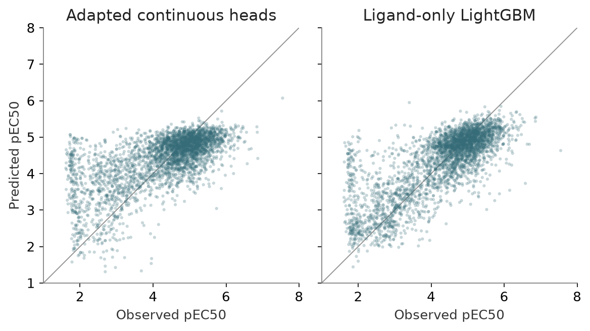

Initial head-only versus rich 2D
Status: completed · Synthesis updated 2026-09-08. Original dates and immutable protocol history remain in the source evidence.
Question
How much can the final regression heads recover?

PNG · SVG · Plotted data · Figure provenance
{kind=link}
{kind=link}
Design and fitted/frozen flow
Two cached 384D vectors [frozen] → twin pretrained continuous MLPs [fitted]. Five nested chemical-family folds; inner selection and three-seed refits. The matched rich 2D LightGBM selects features within training folds.
Results
Development raw MAE: native 0.915, tuned heads 0.633, rich 2D 0.516. Both learned models compress the highest-potency tail.
Implication and limits
Historical 714-row qualified lockbox, later all-790 validation, and 513 challenge rows are distinct cohorts. These retrospective raw-MAE scores are not the later low-data weighted scores.
All evidence is retrospective. Historical budgets, splits and raw versus uncertainty-weighted scores must remain distinct.
Source evidence
Original reports and exact tables (historical report links may refer to unbundled files).